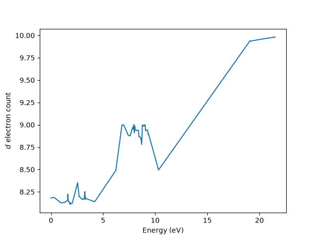
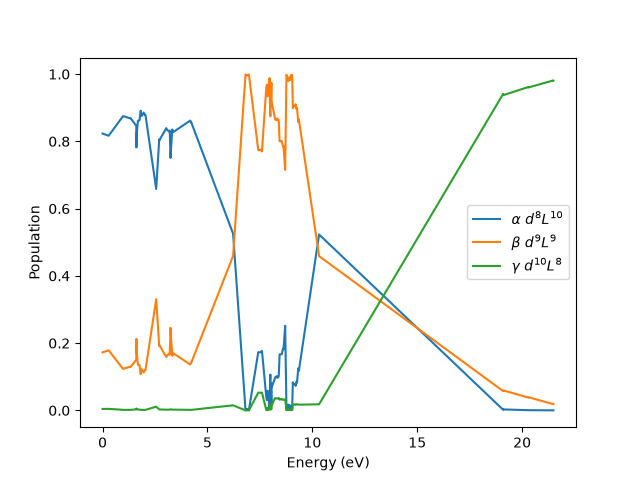

Note
Go to the end to download the full example code.
Ground state analysis for NiO
This example follows the Anderson impurity model for NiO XAS example and considers the same model. This time we show how to analyze the eigenvectors in terms of a \(\alpha |d^8L^{10}\rangle + \beta |d^9L^9\rangle + \gamma |d^{10}L^8\rangle\) representation.
Hamiltonian
We start by obtaining all eigenvectors of the previous Hamiltonian.
/home/runner/micromamba/envs/build-env/lib/python3.12/site-packages/edrixs/scipy_backend/scipy_backend.py:98: UserWarning: The problem size 190 minus the constraints size 0 is too small relative to the block size 190. Using a dense eigensolver instead of LOBPCG iterations.No output of the history of the iterations.
eigenvalues, eigenvectors = lobpcg(
Number of d electrons
We can count the number of \(d\) electrons by building a single-particle
operator single_particle_Nd with ones on the diagonal at the nickel
\(d\)-shell orbitals and zeros elsewhere. build_op()
transforms this into the many-body operator O, whose expectation value
in each eigenvector is the \(d\)-electron count of that state.
single_particle_Nd = np.zeros_like(emat_i)
single_particle_Nd[:norb_d, :norb_d] = np.eye(norb_d)
O = edrixs.build_op(single_particle_Nd, None, basis_i, backend=backend)
nd_expect = np.sum(evec_i.conj() * (O @ evec_i), axis=0).real
fig, ax = plt.subplots()
ax.set_xlabel('Energy (eV)')
ax.set_ylabel('$d$ electron count')
ax.plot(eval_i, nd_expect)

[<matplotlib.lines.Line2D object at 0x7f3003f49fa0>]
Configuration weights alpha, beta, gamma
Every Fock state has a definite \(d\) occupation, so \(O\) is diagonal
in the Fock basis. O.diagonal() therefore gives the \(d\)-electron
count of each Fock-basis component, in the same order as the amplitudes of the
eigenvectors returned by ed().
nd_per_component = np.rint(O.diagonal().real).astype(int)
amp2 = np.abs(evec_i)**2
alphas = amp2[nd_per_component == 8].sum(axis=0)
betas = amp2[nd_per_component == 9].sum(axis=0)
gammas = amp2[nd_per_component == 10].sum(axis=0)
print("Ground state\nalpha={:.3f}\tbeta={:.3f}\tgamma={:.3f}".format(
alphas[0], betas[0], gammas[0]))
fig, ax = plt.subplots()
ax.plot(eval_i, alphas, label=r'$\alpha$ $d^8L^{10}$')
ax.plot(eval_i, betas, label=r'$\beta$ $d^9L^{9}$')
ax.plot(eval_i, gammas, label=r'$\gamma$ $d^{10}L^{8}$')
ax.set_xlabel('Energy (eV)')
ax.set_ylabel('Population')
ax.legend()

Ground state
alpha=0.823 beta=0.172 gamma=0.004
<matplotlib.legend.Legend object at 0x7f3003e2d970>
Total running time of the script: (0 minutes 0.244 seconds)